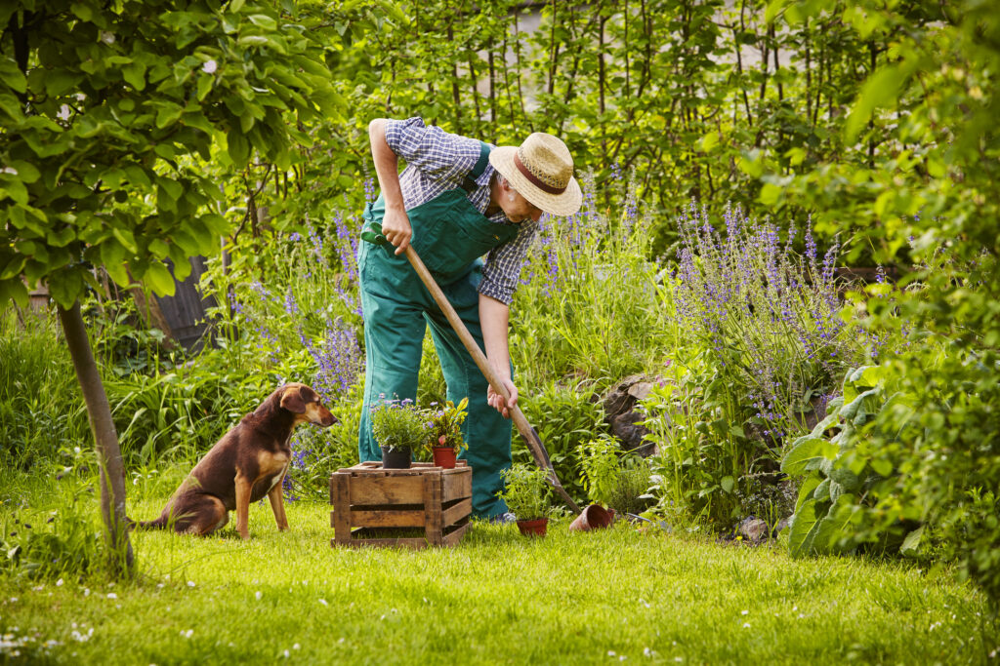

Juhász Erzsébet
8 perce
SZÉP JÓ REGGELT !
Véget ért a Last of Us első évada. Ez lett a valaha készült egyik legjobb videójáték-adaptáció, amit epizódról epizódra egyre többen néztek...
Ugyan az Egyesült Államok nem ismeri el a hágai Nemzetközi Büntetőbíróságot.
SZÉP JÓ REGGELT !

Kedvenc emlékem az elmúlt nyárból, amikor a Tátrában túráztunk. Az élmény egyszerűen fantasztikus volt! Életem legjobb kirándulásának tartom és alig várom, hogy újra visszatérjek oda!
sziasztok xd
Harci bevetésre készen

Sokan értékelik a pénzt és a vagyonukat, de az igazi boldogság nem ott van. Az én boldogságom a kertemben van, ahol az összes növény és állat az én életem része. Boldog vagyok, hogy van időm ápolni őket és egy kicsit lelassulni a rohanó világunkban.
